Brand concepts — four for Burnticker, two for $DEFICIT
Each direction is rendered from standalone HTML with real web fonts. Everything on this page is shown at the same scale (0.4×) so proportions compare truly; the 48 px timeline rows are 1:1. Regenerate with node site/brand-concepts/render.mjs.
Burnticker — Thermal receipt
Courier Prime b1-thermal-receipt/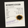
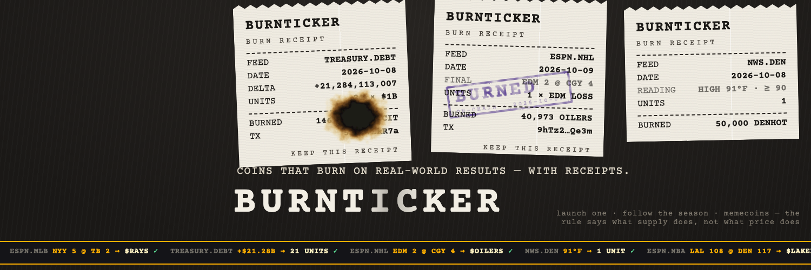
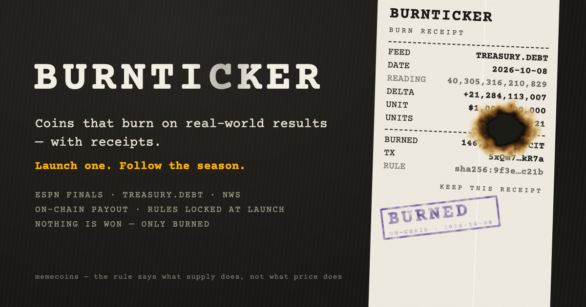
The brand *is* the artefact the product produces: a thermal receipt. Paper is slightly grey-warm thermal stock with print-head banding, one weak-dot stripe running the length of the slip and torn (serrated) ends; type is Courier Prime used as a receipt (label left, value right, dashed rules), never as UI. The burned amount is literally burned out of the slip — an irregular scorch hole with charred/brown/yellowed rings made with an SVG displacement filter, not a flame icon — and a violet rubber stamp with uneven ink says BURNED ON-CHAIN. Palette: paper #f2eee4, thermal black #1b1916, stamp violet #5b3fa3, dark counter surface behind. At 48 px the avatar reads as a pale slip with a dark hole on a dark ground; the header hangs three receipts from the top edge (Treasury debt, a solar flare, a launch) so the launchpad idea — many feeds, one receipt format — is the picture. What keeps it from looking generated: a real-world idiom carried through consistently, asymmetric tilts and lengths, texture that comes from how thermal printers actually fail, and a joke (the hole) that only works in this idiom.
Burnticker — Split-flap board
Oswald + Barlow Condensed b2-split-flap/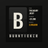
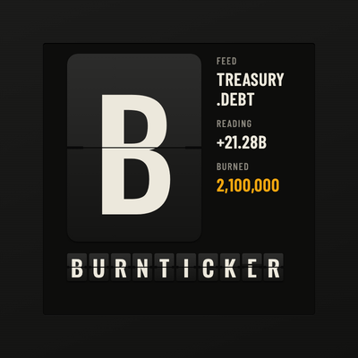
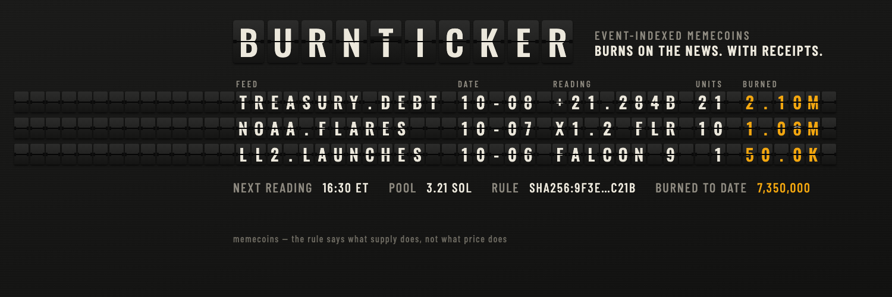
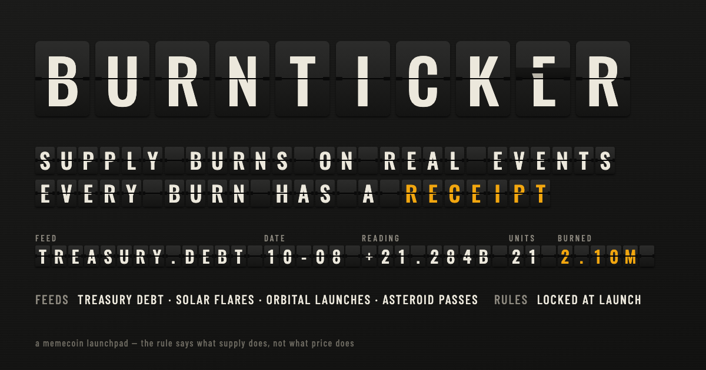
A departures board that lists burns instead of flights. Every character sits in its own Solari-style tile: a top flap and a bottom flap with a dark hinge gap and side pins, flat two-tone shading (no glow, no blur), Oswald as the tile face because split-flap boards use a condensed grotesque to fit a word in a fixed number of cells. One tile is always caught mid-flip — a falling flap drawn with a real perspective rotation, the old character still on it — which is the one detail that says "mechanical" rather than "pixel font". Palette: painted-steel board #131312, tile faces #2c2c2b → #141413, off-white type white letter on a dark cell) with the wordmark spelled in small tiles beneath it and a plain-painted status column to the right, so it is a corner of a board, not a logo. The header is the board itself: a row of blank tiles sits under X's avatar overlay, then FEED / DATE / READING / UNITS / BURNED / ST rows for three feeds. Why it does not read as generated: a fixed cell grid with a physical mechanism, dense tabular content, and asymmetry that comes from the data rather than from layout.
Burnticker — Wire service
Archivo Black + Courier Prime b3-wire-service/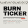
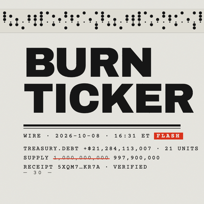
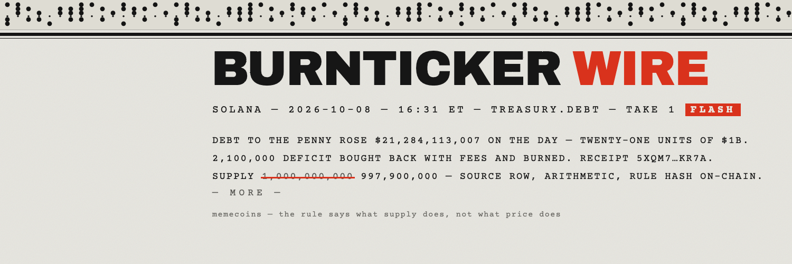
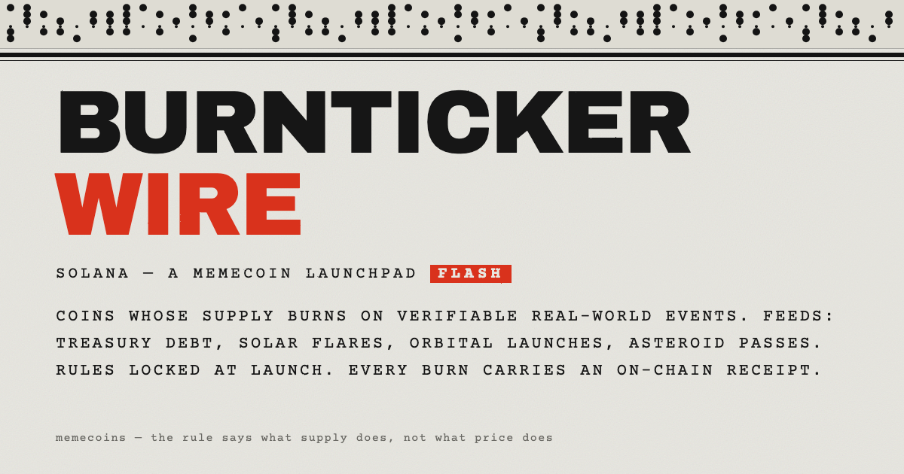
Burnticker as a newswire: it files dispatches, it does not sell. Archivo Black masthead (BURNTICKER WIRE, the WIRE in the one signal red), Courier Prime body in all caps with wide tracking, a thick-thin rule system, a dateline with a reversed FLASH tag, a slug line, and the old "— 30 —" / "— MORE —" end marks. The supply figure is struck through in red and restated, which is the whole product in one typographic gesture. Along the top runs a strip of punched paper tape whose holes actually encode BURNTICKER WIRE in 5-level ITA2 code, sprocket track in the right place — texture that is also true. Paper is a cool grey bond (#e8e7e1), ink #141414, red #d9301c; a faint displacement filter gives the type the slightly struck, uneven edge of a typewriter or teleprinter impression. The avatar stacks BURN / TICKER in the heavy grotesque so it reads as a black type block at 48 px. Why it does not read as generated: monochrome plus one colour, left-ranged everything, period-correct editorial furniture (dateline, slug, take number, end mark) and a code strip that is not decorative noise.
Burnticker — Ledger / engraving
Playfair Display SC + Playfair Display b4-ledger-engraving/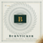
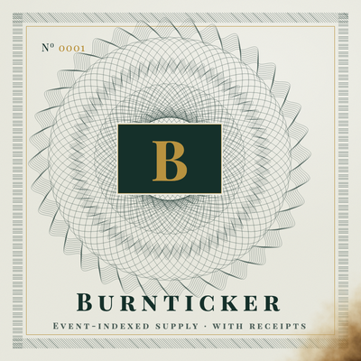
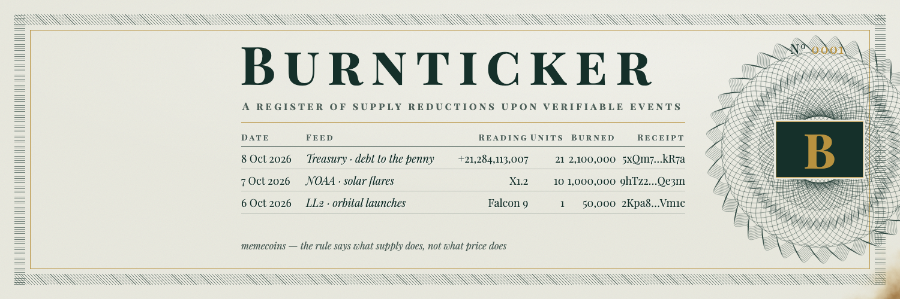
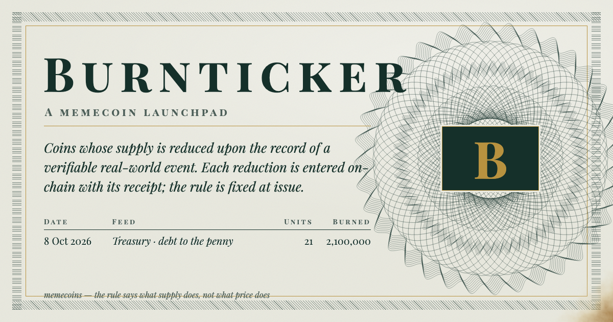
The seriousness of a bond certificate: a register of supply reductions, numbered, ruled, engraved. The guilloche rosette is generated as strokes — forty rotated ellipses and three families of sinusoidal wave rings, the way a geometric lathe draws them — with a hatched engraving frame and a single gold hairline inside it. The wordmark is Playfair Display SC in true small caps; figures are Playfair's old-style numerals with a hairline white relief so they sit "cut" into the paper. Palette: security paper #e9e9df with a green-grey cast, engraver's green-black ink #15302a, gold #b8923f — not cream, not terracotta. The brand mark is an ink cartouche with a gold B set on the rosette (at 48 px: a dark lozenge on a textured pale ground), numbered No. 0001 in the corner; one corner of every sheet is burned away to the dark behind it, which is the only concession to the word "burn". The header is the ledger itself: date / feed / reading / units / burned / receipt, three entries, rules between. Why it does not read as generated: period-specific engraving construction (not a filter), small caps and old-style figures used correctly, restraint — one ink, one metal, one italic — and a mark that is a cartouche, not a coin.
$DEFICIT — Debt clock
Oswald + seven-segment (built) d1-debt-clock/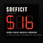
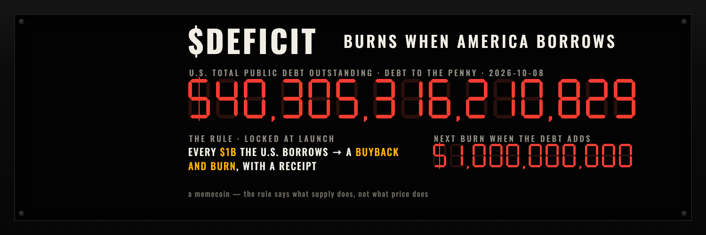
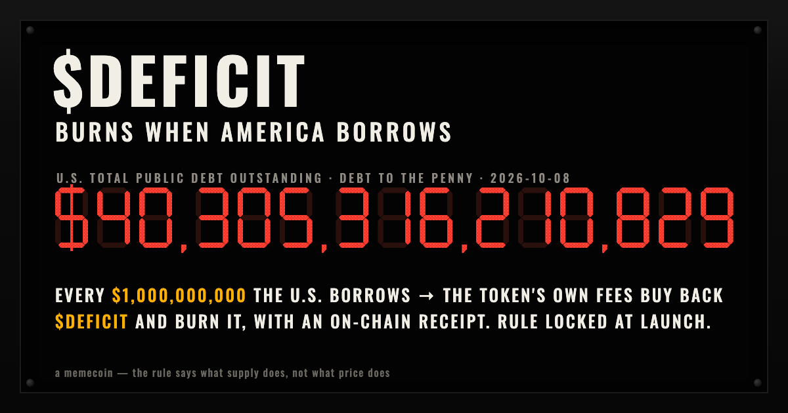
The National Debt Clock billboard idiom, used literally: a black LED board in a dark housing with corner bolts, a white condensed marquee ($DEFICIT, Oswald 700), and the debt itself in red seven-segment digits. The digits are not a font: each glyph is seven hexagonal segments built from boxes, the unlit segments left faintly visible as they are on a real board, and the lit ones carry a fine LED-dot matrix instead of a flat fill. The dollar sign is a seven-segment S with a bar through it, which is how such boards actually fake it. The avatar reduces the whole coin to one figure — $1b, the unit of debt per burn — so at 48 px it is three red glyphs on black, unmistakably a counter. Amber is reserved for what we burned; red for what they borrowed. Strap: BURNS WHEN AMERICA BORROWS. Why it does not read as generated: a specific, dated public object (the clock), component-level construction with its real imperfections (ghost segments, dot pitch, a faked $), and no gradients, glow or rounded cards — the only shading is the housing.
$DEFICIT — Treasury statement
IBM Plex Mono + IBM Plex Sans Condensed d2-treasury-statement/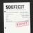
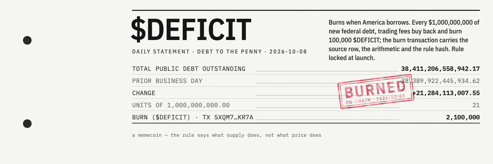
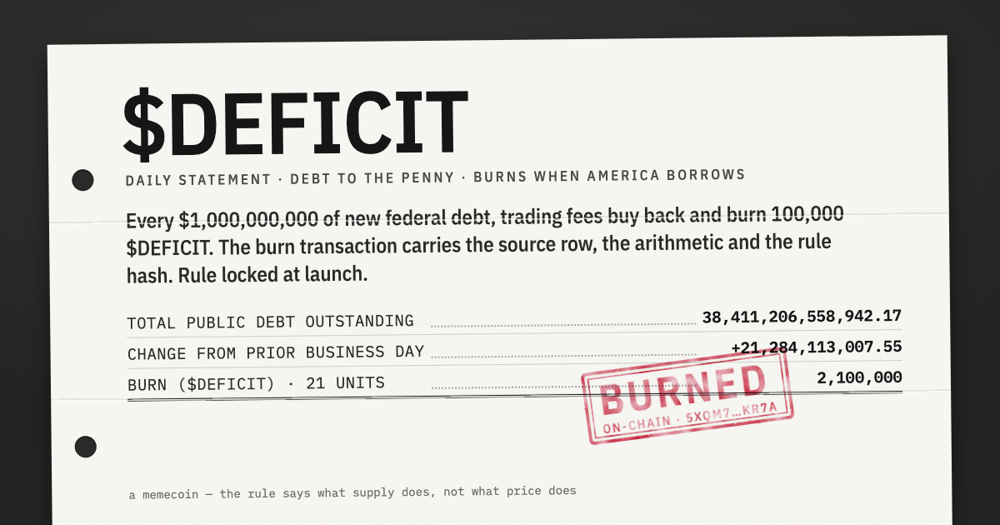
$DEFICIT as the daily statement it is indexed to: a plain office document, not a government one. No seal, no eagle, no agency name as a masthead — just the dataset cited (Debt to the Penny), a date, and the rows: TOTAL PUBLIC DEBT OUTSTANDING, prior day, CHANGE, unit, units, BURN, with dotted leaders and tabular figures in IBM Plex Mono; the ticker and kicker in IBM Plex Sans Condensed. The sheet has tri-fold creases, two ring-binder punches and a faint grain, and lies slightly askew on a dark desk. The one colour is a rubber stamp: double-ring red, rotated, ink broken by a turbulence mask, placed over the change row with the tx hash in its small line. Palette: sheet #f7f7f3, ink #161616, stamp red #c8102e, desk #2a2a29. At 48 px the avatar is a white sheet with a red stamp mark — a document, not a logo. The header is the page seen close, punches at the left margin where X's avatar sits, with the full arithmetic across the right. Why it does not read as generated: the humour is in the deadpan (a statement that files its own burn), the type is used as accounting type, and the artefact details — creases, punches, leaders, double-rule total — are the ones a real form has.